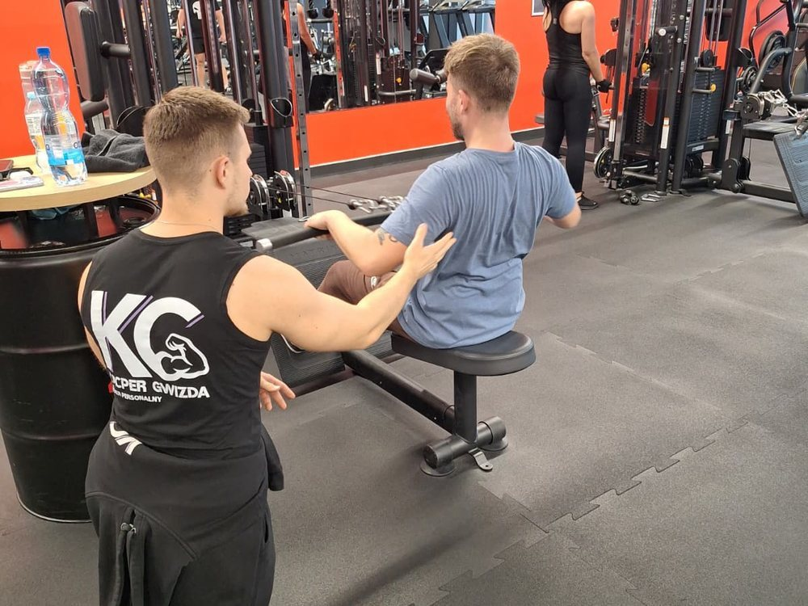

- Strona główna
- Blog
- Zdrowie
Boli Cię kręgosłup? Leżenie na kanapie tylko pogarsza sprawę
Większość osób z bólem pleców kładzie się i czeka, aż przejdzie. Sam od dziecka mam skoliozę i dyskopatię, więc powiem wprost: tak się z tego nie wychodzi.

ZdrowieSiedzisz osiem godzin przy biurku, potem w samochodzie, potem na kanapie. Plecy bolą, więc się kładziesz. Przez chwilę jest lepiej, a następnego dnia ból wraca, często większy. Znam to z obu stron: sam od dziecka mam skoliozę i dyskopatię, a na sali codziennie rozmawiam z ludźmi, których bolą plecy.
Dlaczego leżenie wydaje się dobrym pomysłem
Bo na chwilę przynosi ulgę. Mózg zapamiętuje prostą lekcję: boli, więc trzeba przestać się ruszać. Problem w tym, że ta ulga niczego nie naprawia.
Co się dzieje, gdy przestajesz się ruszać
Mięśnie, które nie pracują, słabną. Słabe mięśnie gorzej trzymają kręgosłup, więc boli częściej. A skoro boli częściej, ruszasz się jeszcze mniej. To błędne koło. Z czasem dochodzi strach: boisz się schylić, podnieść dziecko, wejść na siłownię.
Co na to badania
Naukowcy porównali osoby z ostrym bólem krzyża, którym zalecano aktywność, z tymi, którym zalecano leżenie w łóżku. Te pierwsze miały nieco mniejszy ból i lepiej radziły sobie z codziennymi czynnościami (przegląd Cochrane). To nie cud, tylko kierunek: ruch, a nie łóżko.
Od czego zacząć, żeby było bezpiecznie
- Spacer. 10–15 minut dziennie, bez spiny. To naprawdę się liczy.
- Przerwy od siedzenia. Co godzinę wstań na minutę lub dwie.
- Spokojne wzmacnianie. Brzuch, pośladki i plecy, 2–3 razy w tygodniu, z poprawną techniką.
- Małe kroki. Lepiej mniej i regularnie niż raz „do upadłego”, a potem tydzień przerwy.
Kiedy najpierw do lekarza
Nie jestem lekarzem i nie stawiam diagnoz. Do lekarza idź najpierw, jeśli ból pojawił się po urazie, jest bardzo silny, drętwieją Ci nogi lub krocze, masz problem z oddawaniem moczu, gorączkę albo tracisz na wadze bez powodu.
Jak to wygląda u mnie
Na pierwszym spotkaniu sprawdzam, jak się ruszasz i co Cię ogranicza. Potem dobieram ćwiczenia tak, żeby pomagały, a nie szkodziły, i jestem obok przy każdym powtórzeniu. Zuzanka napisała w opinii: „Wszystko dostosowuje pod podopiecznego, dzięki czemu bóle w końcu ustąpiły”. Jeśli mieszkasz w okolicy, zobacz, jak działają treningi personalne w Chełmży. Jeśli dalej, sprawdzi się Plan Indywidualny rozpisany pod Twoje ograniczenia.